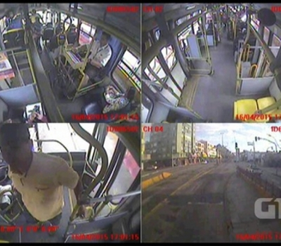
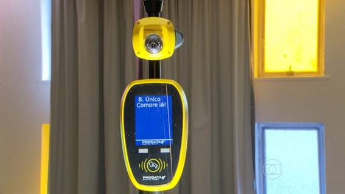

Aproximadamente 80 mil pessoas utilizam o transporte coletivo todos os dias na cidade. Com a instalação das câmeras, a concessionária responsável pelo serviço espera diminuir a criminalidade dentro dos ônibus. “É uma extensão, podemos dizer do olho vivo, onde há um controle por parte da empresa e ela permite o acesso das polícias às imagens quando da necessidade”.
Até o começo do ano que vem, os ônibus de São Paulo ganharão novas catracas equipadas com câmeras que vão flagrar quem usar de forma indevida os cartões que dão desconto na passagem, a tecnologia vai combater fraudes no benefício do Bilhete Único de idosos e deficientes, que não pagam tarifa, e de estudantes, que pagam meia. Estes usuários representam 8% e 9% do total de passageiros, respectivamente. O uso indevido desses cartões por terceiros como um jovem que usa o bilhete do avô, por exemplo configura crime. Cada vez que o cartão for usado, a câmera vai tirar quatro fotos do passageiro. As imagens serão enviadas para um servidor, que fará o reconhecimento facial. Em caso de fraude, o cartão será bloqueado pela prefeitura e o usuário será chamado para esclarecimentos Segundo a prefeitura, com o novo sistema, não será necessário recadastrar os usuários, pois as fotos existentes são suficientes. Além disso, o cobrador não precisará mais validar a passagem. "Aumenta o conforto para quem joga limpo e é eficaz contra quem joga sujo", diz Adauto Farias, diretor de gestão da SPTrans (empresa da prefeitura que gerencia o transporte). O sistema, já presente em cidades de pelo menos 10 Estados, só vai funcionar a partir da instalação dos novos validadores, os aparelhos que controlam a catraca. Os novos validadores também permitirão que as recargas do Bilhete Único sejam feitas dentro dos ônibus a partir de meados de abril de 2015. O formato também vai aumentar a segurança. Hoje, a SPTRANS atualiza a lista de bilhetes que são bloqueados por roubo ou mau uso, por exemplo, uma vez ao dia. O servidor comporta até 10 mil números, mas agora a atualização será em tempo real e a lista poderá ter até 700 mil cartões.
